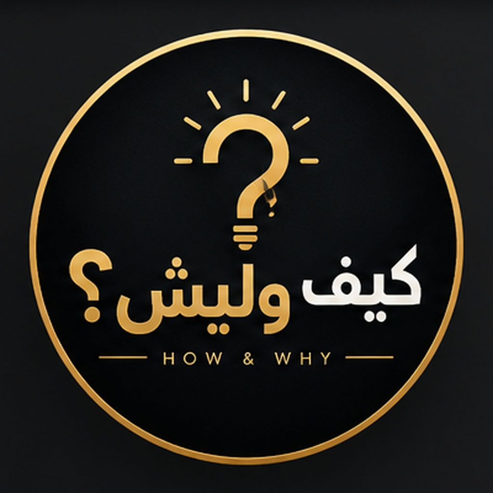

How & Why | كيف وليش؟
Short educational videos in Arabic about space, nature and animals: how things work and why they happen.
فيديوهات قصيرة تشرح كيف تعمل الأشياء من حولنا، ولماذا تحدث.
The "How & Why Uploader" app is a private tool used only by the channel owner to publish the channel's own videos to the owner's TikTok account after the owner approves each one.